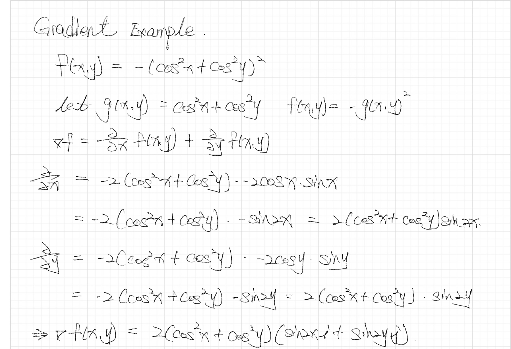

EMF 1. VectorCalculus
Last Edit: 1/13/26
Last Edit: 3/23/26
Scalar Field #
$$ f: \mathbb{R}^n \to \mathbb{R} $$
- Scalar Field is used to describe the distribution of Scalar in space $\mathbb R^n$
Gradient of Scalar Field #
$$ \nabla f(p) = \frac{\partial f(x, y, z)}{\partial x} \hat{x} + \frac{\partial f(x, y, z)}{\partial y} \hat{y} + \frac{\partial f(x, y, z)}{\partial z} \hat{z} $$
- Taking the Gradient turns the Scalar Field into a Vector Field $\nabla f: \mathbb{R}^n \to \mathbb{R}^n$
- Then the vector is pointing to the direction Having the largest rate of change
Ex. Finding the Gradient of a Scalar Field #

Electric Field & Electric Potential #
$$ \vec{E} = -\nabla V $$
- $V$ (Electric Potential): Scalar Field
- $\vec E$ (Electric Field): Vector Field
Divergency of a Vector Field #
Divergency is a scalar representing the strength of Divergency or Convergency at a given point
$$ \text{div } \vec{F} = \nabla \cdot \vec{F} = \frac{\partial F_x}{\partial x} + \frac{\partial F_y}{\partial y} + \frac{\partial F_z}{\partial z} $$
- $\nabla \cdot \vec{F}: \mathbb{R}^n \rightarrow \mathbb{R}$: Process of finding Divergency is finding a Scalar Field
- $\nabla \cdot \vec{F} > 0$: Source are going out at this point
- $\nabla \cdot \vec{F}< 0$: Sources are coming in at this point
Gauss’ Divergence Theorem #
$$ \iiint_V \text{div } \vec{F} , dv = \oiint_S \vec{F} \cdot d\vec{S} $$
Divergency Theorem Example #
Evaluate $\iint \vec{F} \cdot d\vec{S}$ where $\vec{F} = xy\hat{x} - \frac{1}{2}y^2\hat{y} + z\hat{z}$ and the surface consists of the three surfaces of cylinder defined by $0 \le \rho \le 1, 0 \le \phi \le 2\pi, 0 \le z \le 1$

Curl of a Vector Field #
$$ \nabla \times \vec{B} = \left( \frac{\partial B_z}{\partial y} - \frac{\partial B_y}{\partial z} \right) \hat{x} + \left( \frac{\partial B_x}{\partial z} - \frac{\partial B_z}{\partial x} \right) \hat{y} + \left( \frac{\partial B_y}{\partial x} - \frac{\partial B_x}{\partial y} \right) \hat{z} $$
Curl of a Electric Field #
$$ \nabla \times \vec{E} = 0 $$
- Electric Field‘s Direction is either point to or away from the source, thus it doesn’t have any Circulation, thus having a Curl of zero
Stokes’ Theorem #
$$ \iint_S (\nabla \times \vec{B}) \cdot d\vec{S} = \oint_C \vec{B} \cdot d\vec{l} $$